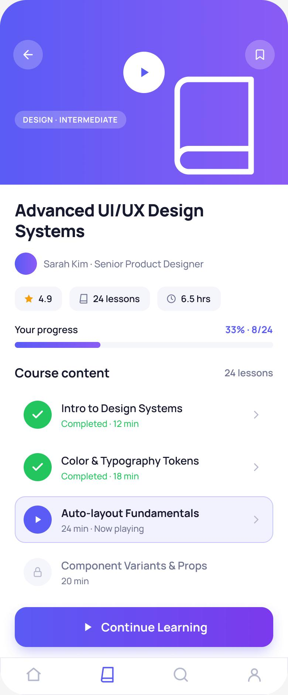

The Problem
People enroll in online courses full of intention — and rarely finish. They lose their place, lose momentum, and the dashboard does nothing to pull them back. Completion rates sit in the low double digits.
How might we help learners maintain momentum and actually finish the courses they start?
Goals & Success Metrics
- ▶Effortless resume“Continue where you left off” as the hero action, one tap away.
- ◎Visible progressEvery course shows how far along you are — and what's next.
- ♦Motivating momentumWeekly goals & streaks that reward consistency.
Target metrics: time-to-resume < 5s · next-lesson findability > 90% · SUS > 80 · motivation ↑.
User Research
Key findings
- 1Resuming is the biggest frictionLearners abandon when they can't instantly find where they stopped.
- 2Progress is motivatingSeeing “33% complete” and a shrinking to-do list pulls people forward.
- 3Micro-learning fits real lifeBusy learners study in short mobile bursts, not long desktop sessions.
- 4Goals & streaks workDuolingo-style weekly goals meaningfully increase return visits.
Personas
Arjun Kumar
"I get 30 minutes between work and life. Just drop me back exactly where I stopped."
- Resume instantly in spare moments
- See how close he is to finishing
- Hunting for the next lesson
- Losing momentum after a break
Lena Brar
"Streaks and weekly goals are what keep me coming back — I don't want to break the chain."
- Hit a weekly learning goal
- Feel progress & accomplishment
- No sense of momentum or reward
- Flat, uninspiring dashboards
User Flow — Resume & Complete
Wireframes
Low-fi centred the dashboard on a big “continue learning” hero, with progress and a weekly goal in view — and a mobile course page built around lesson states.
Hi-Fi Design & Prototype
The dashboard leads with a “Continue Learning” hero (progress bar + Resume), course cards each show their progress, and a weekly-goal ring rewards consistency. The mobile course page uses clear lesson states — done, now-playing and locked.


Key design decisions
- ◆“Continue Learning” heroThe single most-wanted action — resume — is the biggest, clearest thing on the page.
- ◆Progress everywhereCourse cards, a completion bar and a weekly-goal ring keep momentum visible.
- ◆Lesson statesDone ✓ / now-playing / locked make “what's next” unmistakable.
Usability Testing
6 learners, moderated remote sessions.
Tasks: (1) “Resume your in-progress course.” (2) “Find the next lesson to complete.”
| Metric | Target | Result |
|---|---|---|
| Time to resume a course | < 5s | 3s |
| Next-lesson findability | > 90% | 96% |
| System Usability Scale | > 80 | 85 |
| Motivation to continue (1–5) | ↑ | 4.4 |
What testing changed
Resume competed with browsing new courses. → Made “Continue Learning” the visual hero with a clear Resume button and progress.
Learners weren't sure which lesson was next. → Strengthened lesson states (done / now-playing highlight / locked) so the next step is obvious.
Results & Impact
Reflection & Next Steps
Completion is a design problem, not a content problem. Making “resume” frictionless and progress visible did more for momentum than any feature. Borrowing habit mechanics (goals, streaks) from Duolingo translated well to structured courses.
Next: smart reminders after a lapse, downloadable lessons for offline micro-learning, and certificates/celebrations at milestones.